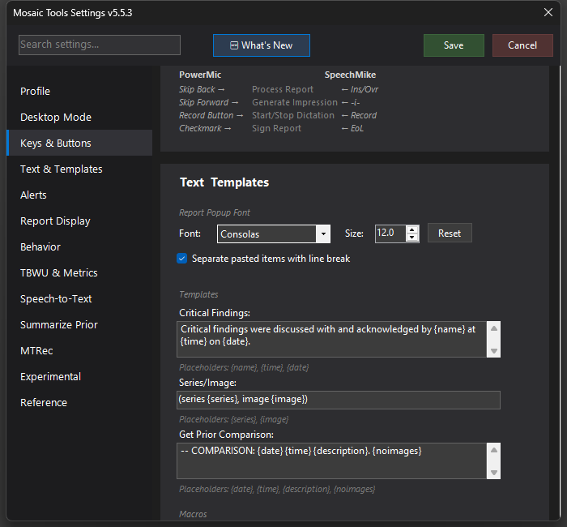

Capture Series/Image
OCRs the InteleViewer viewport header to grab the current series and image numbers and inserts them into your report, formatted your way.

What it does
When you want to reference a finding by series and image ("series 4, image 52"), this action reads those numbers off the screen for you: it screenshots the corner of the active InteleViewer viewport, runs OCR on the header text, extracts the series and image numbers, and inserts them into the Mosaic report at your cursor — formatted through your template.
How to turn it on / set it up
- Map the Capture Series/Image action to a mic button or hotkey under Settings → Keys & Buttons.
- Optionally customize the output under Settings → Text Templates → Series/Image, using the
{series}and{image}placeholders (e.g.(series {series}, image {image})).
Using it
- Have the image you want to reference up in InteleViewer.
- Trigger the action. MosaicTools locates the active viewport (it looks for InteleViewer's yellow active-viewport marker; if none is found it captures around your mouse cursor instead).
- A "Capturing..." toast appears, then "Inserted: …" with the formatted text — which lands in the report editor without you touching the keyboard. With CDP enabled the insertion goes straight into the editor DOM; without it, Mosaic is focused first.
Tips & gotchas
- OCR needs the viewport header text to be legible — if the overlay text is disabled or the capture misses, you'll get a "Could not extract series/image" toast; click into the viewport (so the yellow marker is where you expect) and try again.
- The action is blocked while an addendum is open ("Cannot paste into addendum"), since inserting there would edit the wrong document.
- The fallback capture region is centered on your mouse — if the yellow box isn't detected, park the cursor near the series/image text before triggering.